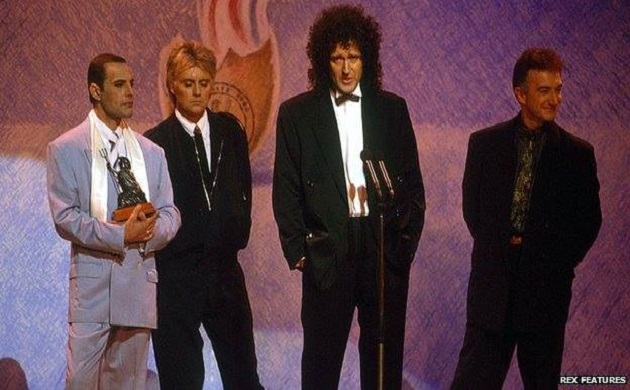

The Sucess of Queen

Awards and Nominations
Here is the list of awards and nominations for the Band QUEEN!! Since their rise of popularity, they continue to gain impact not solely by their music but also through features in films, as well. Even after Freddie Mercury's death, the band remains alive and continues to remain as the icon of rock and pop culture. Whether they won the award or was nominated, Queen remains strong in their status and will continue to remain impactful not only to the music industry but to the international audience as well.
| Year | Award Name | Song / Album / Works | Won or Nominated |
|---|---|---|---|
| 1976 | Grammy Award for Best Pop Performance by a Duo or Group with Vocal | Bohemian Rhapsody | Nominated |
| 1977 | Brit Award for British Single | Bohemian Rhapsody | Won |
| 1980 |
|
|
|
| 1981 |
|
|
|
| 1982 | Brit Award for British Album of the Year | Greatist Hits | Nominated |
| 1984 | MTV Video Music Award for Best Art Direction | Radio Ga Ga | Nominated |
| 1985 |
|
|
|
| 1990 |
|
|
|
| 1992 |
|
|
|
| 1973 | Echo Award for Best International Rock/Pop Group | ---------------- | Nominated |
| 2003 | Grammy Hall of Fame Award | Bohemian Rhapsody | Won |
| 2004 | Each Award for Best Music DVD | Queen at Wembley | Nominated |
| 2005 | Brits 25 Best Song Award | We Are the Champions | Nominated |
| 2008 | Grammy Hall of Fame Award | We Are the Champions/We Will Rock You | Won |
| 2011 | MTV Europe Music Award for Global Icon | ---------------- | Won |
| 2013 | Kerrang | ---------------- | Won |